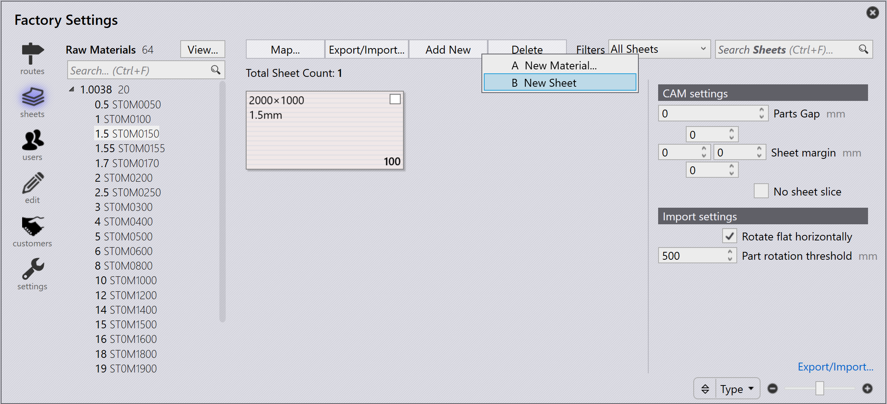

Nieuw materiaal en plaat toevoegen
Het plaatbeheer is toegankelijk door op het Factory- pictogram te klikken en sheets te selecteren. Dit geeft een overzicht van de materialen die zijn ingesteld. Als u een van de links weergegeven materialen selecteert, worden de beschikbare platen, diktes, formaten en aantallen weergegeven.
Om een nieuw materiaal toe te voegen, klikt u op Add new → New Material… op de pagina sheets in factory.

Voer Material, Raw Material, Thickness en materiaalparameters in. Klik op OK.

Materiaal weergeven
De optie View… in factory → Sheets heeft de volgende opties:
-
Expand All: Vouwt alle materiaalcategorieën uit.
-
Collapse All: Vouwt alle materiaalcategorieën samen.
-
Show All Materials: Toont alle grondstoffen ongeacht de plaatvoorraad.
-
Show Inventory Materials: Toont alleen grondstoffen die plaatvoorraad hebben.
| Een grondstofdikte die vet wordt weergegeven, geeft de beschikbaarheid van platen aan. |
Plaat toevoegen
Om een nieuwe plaat toe te voegen, klikt u op Add new → New Sheet op de pagina Sheets in factory. Wijzig de plaatparameters.


-
Search Sheets (Ctrl + F)…: Filtert platen op basis van formaat, nerf, opmerkingen, smeltnummer, restant en vaporize.
-
Schuifregelaar (+ / –): Past het zoomniveau van de plaatvoorbeeldweergave aan.
-
Filter by: Regelt de plaatvoorbeeldweergave op basis van de geselecteerde optie (Width, Height, Area, Quantity, Grain of Type).
|
Het bewerken of verwijderen van een materiaal of plaat kan alleen worden gedaan voordat een onderdeel aan dat materiaal is toegewezen of een lay-out op die plaat is genest. Het wijzigen van de materiaalnaam is in dit stadium niet mogelijk. Daarom moet een nieuw materiaal worden gemaakt. |